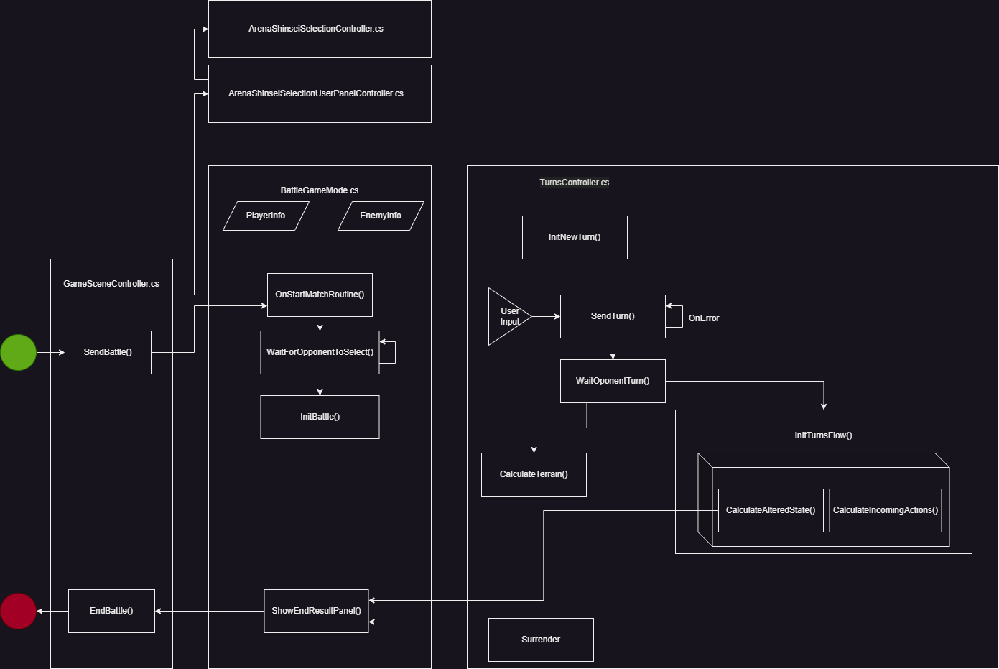

Battle system
The system is basically composed of 3 pillar controllers:
- The GameSceneManager.cs: Which receives the request to create a match and configures the initial data needed to start the battle.
- The BattleGameMode.cs: Which handles general game information such as player information and also handles game status such as the start and end of the game.
- The TurnsController.cs: The main controller of the game. It handles the logic of the individual turn and turn flow.

Let's look at each of them in more detail.
GameSceneManager.cs
This class sends a petiton to create a new battle with the SendBattle method. It is necessary to pass it the necessary data such as the matchId of the game, the current shinseis of the players and their stats. After that, it creates an instance of the battle, changes the player status in the database to combat and turns off the unnecesary open windows at the moment. After that it passes the flow to the BattleGameMode.cs with all the necessary data to start the battle.
On the other hand, when the battle is over, this is the controller that returns us to the lobby with the EndBattle method, showing again the lobby UI and deleting the battle instance.
BattleGameMode.cs
In the battle game mode we have the pre-battle flow and displaying of the end of battle. We also handle here the general data of the users in the battle.
We start in the OnStartMatchRoutine() method once the data is initialised, with the initialisation of the pre-battle shinseis selector. These are handled by controllers such as the ArenaShinseiSelectionController.cs and the ArenaShinseiSelectionUserPanelController.cs which handle the entire flow of viewing and choosing the shinseis for the battle.
Once chosen, it notifies BattleGameMode.cs with the shinseis that were chosen or with the fact that time is up and no shinseis were chosen. If they were indeed chosen, it proceeds to send the indices of the chosen shinseis to the server via a CloudScript.
Then the flow proceeds to wait for the other player to choose with the method WaitForOpponentToSelect() and once this is done it initializes the data of the chosen shinseis, the life and energy bars, the shinsei change system and spawn the shinsei.
After this it continues with the start-up cameras, which show the shinseis from the front and finally once those cameras finish showing the shinseis, the UI is initialised. From here, the TurnsController.cs will control the rest of the flow of the battle.
Once the match is over the BattleGameMode.cs will return to the BattleGameMode.cs method to display the result screen.
TurnsController.cs
This class handles the flow of the battle once it has started. It initialises along with the BattleGameMode.cs and initialises the Battle Actions dependencies. Then we continue the flow with each turn start in the InitTurnFlow() method. Every time a turn starts we check if the player is sleeping or not in order to run the animation and send a mandatory turn skip to simulate the sleeping state. This is a temporary solution that should be changed to a BattleAction, but for the moment it is like this.
Send Turn
Then the flow continues when the player decides to send an action with the SendTurnRequest method, either one of his cards, a shinsei change, a skip turn or a surrender. All these actions are sent with an index as follows:
- 0,1,2,3 => Shinsei attacks in that respective order.
- 4,5,6 => Change to the respective shinsei (i.e.: 4 -> first shinsei)
- 7 => Skip Turn
- 8 => Surrender
The index is sent to the server via a CloudScript. If the request fails it is reentered by sending the turn up to a maximum of 7 times. After that it is considered a disconnection of the player who could not send the turn. Also the case when for whatever reason the match is over according to the server is taked into account too. In this case BattleGameMode.cs is called to end the match on the client.
In case everything works correctly, we continue to wait for the other player's turn.
Receiving turns from the two players
The method WaitOponentTurn() helps us to wait for the opponent's turn by sending a CloudScript every X seconds, where X is the time defined by parameter (i.e: 3seconds). This request performs all the necessary calculations in the server for it to process and I have a snapshot of the game with those turns processed. Then once this process is finished, it returns the turns of the two players so that the client processes the turns itself. This method handles and delegates from end-of-game to the processing of altered states, terrain and BattleActions.
As for Terrain, these are stored in the BattleGameMode.cs and can only exist one at a time. Each terrain has its own controller which inherits from the BattleTerrainBehavioursBase.
A similar thing happens with altered states, only instead of being stored in BattleGameMode.cs per se, they are stored in the specific shinseis that have the altered states. But these can be multiple per shinsei. They are all controlled by classes that inherit from BattleAlteredStateBase.
The processing of the current player's altered state and battleActions** is encapsulated in an event or Action that is passed to the InitTurnFlow() method. This method, with the help of the server response, determines who starts the turn first and whether or not the other player can execute the turn due to being dead or asleep. This method handles the timing based on an action time that is defined at the start of the execution of the altered states and Battle Actions. After defining the time for the InitTurnFlow() to wait, these are executed with their vfx and cameras.
Battle Actions
The battle actions are executed with the help of the method CalculateIncomingActions(). This method applies the energy and executes the Battle Actions in the order in which the player has received/sent them. These battle actions vary from an attack, a heal, a buffdebuff, setting up altered states or terrain, etc. Each of these actions has a controller that inherits from BattleActionsBase. This base runs the vfx with its timings so that its inheritance only cares about the logic of the action. As we said before the vfx time is sent to the turns controller so the InitTurnFlow() method can control the waiting time for the skills to finish executing their vfx. When the method has finished executing all the actions, it proceeds to check if the shinseis have died and if they have all died to end the game locally.
End of the game
The end of the game is executed if the server indicates it, either by the detection of a surrender or because the match ended on the server. It is also executed if the client ends the game with its current values, this is a security measure, however all prizes, scores, etc. will be reflected in how the game ends on the server.